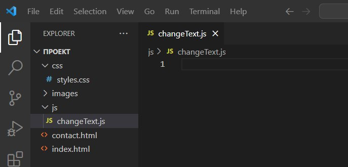
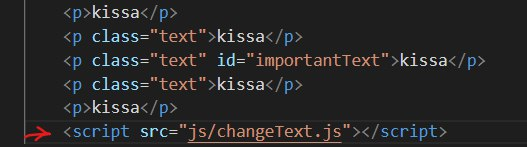

johdanto
Meidän sivusto on staattinen, siksi voimme tehdä ilman JavaScriptiä. Tätä ohjelmointikieltä käytetään yleensä taustajärjestelmään, erilaisiin animaatioihin ja muihin monimutkaisempiin visuaalisiin tehosteisiin, joita ei voida toteuttaa css:llä.
Tiedoston luominen ja yhdistäminen
luo "js"-kansioon tiedosto, jonka tunniste on .js, anna tiedostolle nimi, joka kuvaa lyhyesti tämän skriptin toimintaa.
Yhdistä skripti sivuston alareunassa:
